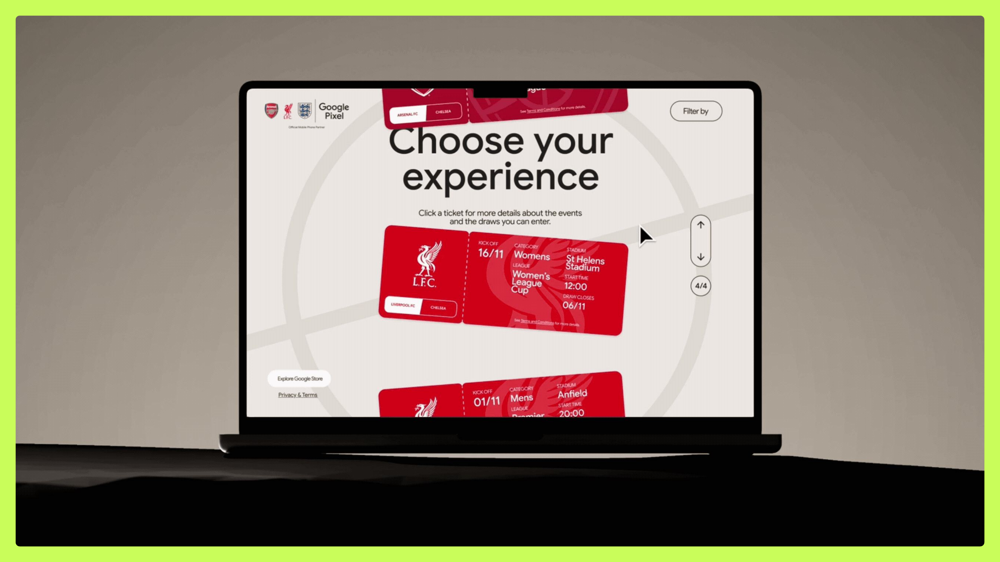
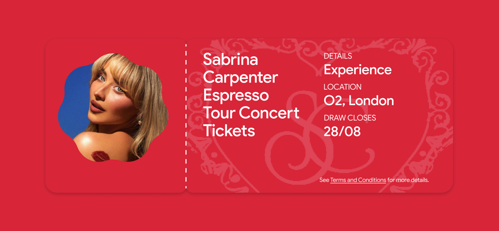
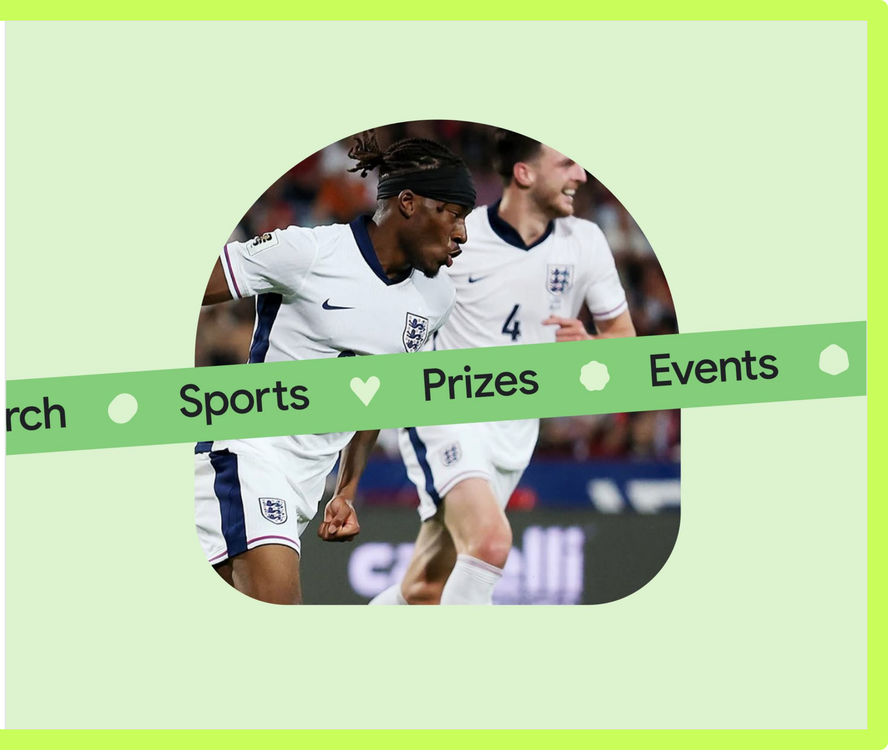

BrightLocal is a local SEO platform used by thousands of agencies. I led a year-long brand and product transformation that reignited stalled revenue.
Revenue had plateaued and the brand was indistinguishable from competitors. Even internal teams struggled to tell them apart.
I led a 12-month brand and product transformation. Trial-to-paid conversion rose 28%, new-user revenue grew 36%, and the design team scaled from 4 to 16.
Read the case study


Google partnered with football clubs across the UK, Germany and the US to reward fans with exclusive experiences. I led the Superfans platform from ideation to launch, built around a single concept: the ticket.
What started as a simple giveaway page quickly scaled across multiple clubs, markets and experience types: match days, stadium tours, merch drops, concerts and VIP experiences.
I designed the ticket as both interaction model and brand framework, a system flexible enough to handle localisation and regional edge cases without breaking usability.
Read the case study


Evolution is an AI-powered talent identification platform used by leading football clubs. I led product design, turning dense scouting data into transfer decisions worth millions.
Clubs needed to compare players across global markets and move fast in transfer windows, but the underlying data science was impenetrable to the people making the calls.
I led product design across squad analysis, player comparison, and AI-driven transfer recommendations, working directly with data scientists to make the models usable.
Read the case study


Nisba is a halal investing education platform. I designed their investment screening tool from zero to shipped product, taking it from discovery workshops to paying users.
Nisba's 10,000+ subscribers had the knowledge but no way to apply it. Manually screening index funds for Sharia compliance was too slow, so most people simply didn't.
I led discovery, research, and product design for a screening tool that connects to Trading 212. 160 paying sign-ups in week one, before any promotion to the full list.
Read the case study


Nisba's brand didn't match the credibility of its founders. I redesigned their brand experience and website, turning trust and clarity into a 57% increase in Academy sign-ups.
Nisba had thousands of weekly visitors but almost nobody was converting. The brand didn't feel trustworthy enough for a financial education platform, and the purchase journey was buried behind confusing click paths.
I led discovery, brand direction, and a full website redesign. The streamlined purchase flow alone drove a 57% uplift in Academy sign-ups before the full site even launched.
Read the case study


TaylorMade's app was a basic score tracker. I led its reimagining as a digital clubhouse, pairing player data with coaching, insights and gear recommendations.
The original app served one narrow purpose: manual round tracking. There was no reason to open it between rounds.
I led the reimagining from the ground up across iOS, Android, and Apple Watch. Downloads doubled in year one and sales rose 18.6%.


American Express needed a modern, digital-first identity to close a generational brand gap. My team unified the work of Pentagram, McCann and Ogilvy into one global system.
Global markets were interpreting the brand their own way. One APAC team had even redesigned the logo because the guidelines didn't fit their digital needs.
I led the development of a modular brand system that unified execution worldwide. It remains the backbone of Amex's global brand strategy.


Twenty First Group is a global sports consultancy advising the Premier League, European Tour and FIFA. I led their rebrand from a house of brands into one unified consultancy.
The business had outgrown its house-of-brands structure. As leader of the in-house studio, I directed the move to a single consultancy identity with global appeal.
Beyond the rebrand, I was Creative Director on client platforms including the Titleist Hub, a data product for tracking and supporting sponsored athletes.